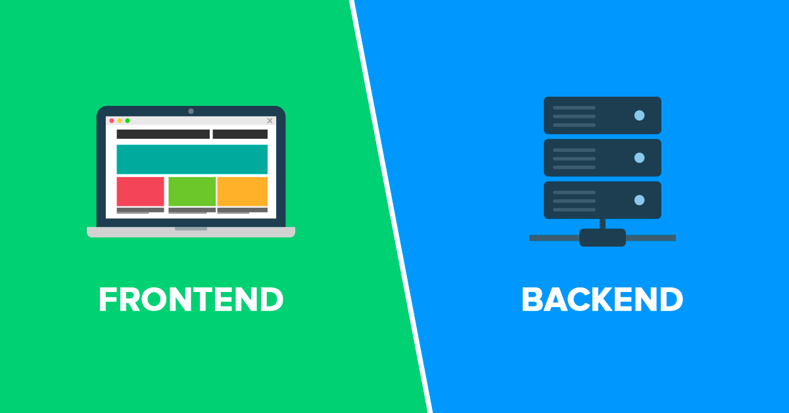

Как известно, современная разработка делится на frontend и backend. Специалисты первого типа занимаются разработкой пользовательского интерфейса и функциональности, которые работают на клиентской стороне веб-сайта или приложения; второго — логикой работы сайта или приложения. 
Меня зовут Максим, я учусь в Университете ИТМО
по направлению "Прикладная математика и информатика".
Учёба на этом направлении предполагает в дальнейшем профессию backend-разработчика,
так как получаемые на занятиях знания необходимы именно для решения задач, связанных с логикой
работы приложений.
В весеннем семестре 2019 года нам был предложен к изучению курс, посвящённый frontend-разработке.
У ряда студентов возник вопрос: нужно ли мне изучать frontend?
.